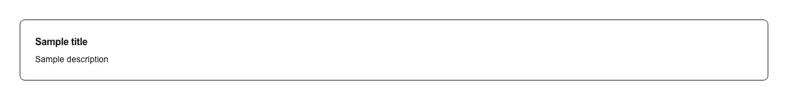

An icon + heading + one line of copy, as the repeating tile in the features or benefits section of a landing or marketing page — a “why us” grid, “what’s included”, value props, product highlights, services, capabilities, or a perks row on a pricing page. Drop several into a responsive grid (grid-cols-2 / grid-cols-3) and that is the whole section; each card takes icon, title, description and optionally href. Set href and the entire card becomes the click target: it renders as an <a> rather than a <div>, with hover and a focus-visible ring, so keyboard users get one tab stop per card instead of hunting for a small link nested inside it. shadcn/ui ships no feature card. Its card is a generic container (~1.8KB of source, no dependencies) with no icon slot and no href — the icon square, the heading and the link are all yours to assemble. Its newer item is the closest thing in shape and does have an icon slot, but it is a ten-part compound kit (ItemGroup, Item, ItemMedia, ItemContent, ItemTitle, ItemDescription, ItemActions, ItemHeader, ItemFooter, ItemSeparator) that also pulls in separator, and it is built for list rows rather than a marketing grid. Two concrete differences past the assembly work: official’s ItemTitle renders a <div>, so a features grid built from it contributes nothing to the document outline, whereas this renders a real heading you choose with headingLevel (h2/h3/h4, default h3) so screen-reader users can jump feature to feature; and official’s ItemMedia sets no aria-hidden, so a purely decorative icon can still be announced, whereas this marks the icon square aria-hidden and lets the title carry the meaning. Neither official component accepts an href, so “make the whole tile a link” is hand-wired in both. Zero dependencies — bring your own icon element (a lucide-react icon, an emoji, an <img>); it sits in a tinted primary/10 square, and everything else follows your shadcn tokens including dark mode.

Rendered on the shadcn default neutral palette with harness-generated props.
pnpm dlx shadcn@4.21.0 add @pulld/feature-card
| licence | POINTER |
|---|---|
| primitive base | none |
| type | registry:ui |
| files | src/components/ui/feature-card.tsx |
| npm deps pulled | none beyond the pre-installed peer set |
| registry deps | — |
| semantic / palette / hex | 10 / 0 / 0 |
| writes shared ui/ | yes — can overwrite the project’s own primitives |